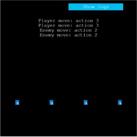
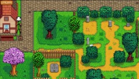
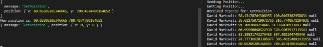
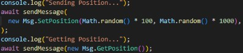
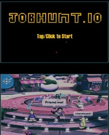
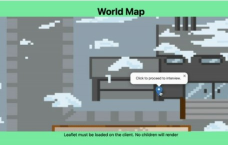
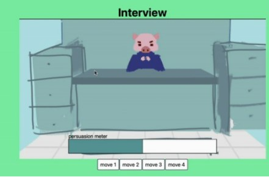

We made a vertical slice of our game, Jobhunt.io, for a university course we have taken together, with the exception of our external help.
Here is an embedded video of our game in action:
We did it on a team consisting of:
Engine Lead: Aaron Lee
Tools Lead: Dave Markowitz
Production Lead: Monserrat Fausto
Art/Playtesting Lead: Nick Tung
Design Lead: Thanyared Wong
External Splash Artist: Eliana Cadelina
Design Constraints
Our game was designed under the following externally imposed constraints:
Accessibility:
Vision: For the vision constraint, our team was tasked with making sure our game can be completed using a high contrast grayscale image filter.
Our current color scheme is contrasting enough even when applying colorblind filters so a player can easily distinguish between the items on the screen.
Touch: For the touch constraint, our team was tasked with making sure our game can be completed using a single hand (but another hand may help).
To play our game, if a player were to play on their PC/Laptop, all they would need is access to a mouse/trackpad to help them navigate through the game by right clicking on specific events.
If played on a mobile device, all the player would really need to play is at least one finger to tap on the screen and trigger certain events.
Hearing: For the hearing constraint, our team was tasked with making sure our game can be completed with no auditory information (but sonic art is appreciated).
Our game is currently implemented without sound so a player with hearing impairments can have the same experience as someone without them.
Rest: For the rest constraint, our team was tasked with making sure active play can always reach a natural resting point within two minutes without the need to actively pause the game.
As we do not have any active timers implemented affecting gameplay, players can take a step away from the game whenever they want and not face any penalties.
Localization:
For the localization requirements, our team was tasked with providing language support for two different written languages,
with at least one language using either a logographic script or a right-to-left script.
Currently Supported Languages:
English (US)
Mandarin
Arabic
Game Format:
Our game is a working live, server-side component that is playable on mobile browsers and can use unlimited network data transfer during play.
Playable Game Link
Here is where you can directly play our game: Jobhunt.io
Prototypes
Here are some prototypes we made along the way:
Sprint 1
Core Gameplay

Design Question:What is the right framework for the gameplay/frontend?
Knowledge Gained:We learned that Phaser has a lot of technical debt that needs to be paid that might not be worth it. We are investigating other tools that may be more suitable for our purposes.
Core Gameplay

Design Question:What are the challenges and pros/cons of using different tools?
Knowledge Gained:When we marry the results of the server prototypes and gameplay prototypes, we will know what the best tool for our needs is.
Deployment


Design Question:What can we implement to show a basic understanding of how a client and a server would communicate?
Knowledge Gained:We have a long term storage method (SQLite) and a simple to update, easy implementation for duplication of messages from any source (client->client, client->server, and v.v).
Sprint 2
Deployment
Design Questions:
How do we provide an easy way to have basic cross platform account management?
Where should we actually be hosting our service?
How does the new architecture work?
Knowledge Gained:
Using a homemade one would require good security and pen-testing, something that is far more effort than a prototype right now, so we opted to use Google OAuth.
AWS was chosen initially, however Deno Deploy was chosen instead for being cheaper and easier to use with our runtime.
This was a new tech for the team, so we had to spend time understanding what we were working with and how it would be communicated to the end user.
Splash Experience

Design Questions:
Can someone who is colorblind have the same experience as someone who is not?
Which opening sequence provides a more immersive experience for the player? Loading into the map or the hub?
Knowledge Gained:
Make sure the color scheme is consistent and contrasting throughout the entire experience to avoid confusion.
As long as we play into our game's current strengths and themes, players will be more likely to accept our initial progression into the game with the map.
Scene Flow


Design Questions:
Is it possible to use Leaflet with our custom map?
Can we redirect to another page (our interview screen) using location markers?
Knowledge Gained:
We can use a custom map with Leaflet, but specific dimensions and boundaries must be known to configure the map properly.
Redirection was very simple, and just used a URL to move to the interview screen. It will also be easy to implement more markers for the future.
Contributor Highlights
Here are the highlights of what each contributor contributed:
Aaron Lee: As the Engine Lead, my contributions were mostly creating a game engine, as it was my decision not to go with a traditional one like Unity or even Phaser. I planned and implemented a system where our website would have all the functionality needed to support a game.
Dave Markowitz: As the Tools and Deployment person, my contributions lied in reliable and fault free CI/CD. I assisted with gameplay and design when necessary as well are troubleshooting difficult issues.
Monserrat Fausto: As the producer, my contributions to the project included developing and maintaining scheduled meetings, overseeing creative and technical development of the game, and ensuring timely delivery of deliverables.
Nick Tung: I was responsible for art direction and created the map screen, battle screens, and parts of the post-win comic. Additionally, I was responsible for the mock-ups and some of the creative direction within the game.
Thanyared Wong: As design lead, I was responsible for implementing the initial map functionality and battle screen, as well as overseeing and maintaining the connections between different parts of the game, and delegating tasks to the tools or engine lead as needed.
Eliana Cadelina (External): As the splash artist, my contributions included producing the Title and Loading Screens for the game.